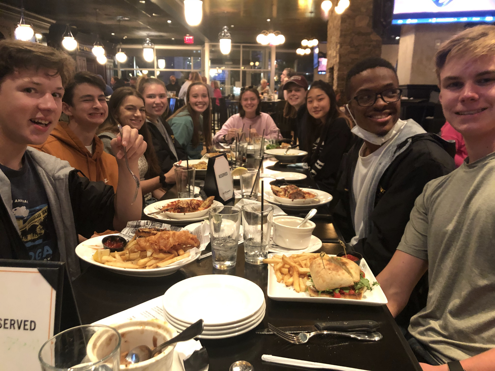

North Allegheny Rowing Association
The North Allegheny Rowing Association (NARA) is a high school rowing team that has members ranging from 7th grade to 12th grade. Developed in 1989 on Washington's Landing, the club continues to function. The boathouse is located in Coraopolis, Pennsylvania at a location with the name Montour Marina. A number of different boat classes reside in the boat house, but the team mainly focuses on sculling. The Head Coach is Bailey Chick and Associate Head Coach is Todd Ridenour. The Assistant Coaches who focus on instructing the underclassmen and development team are Lindsay Feltz and Madison Parry. The club itself runs year-round and has a primary goal of guiding young rowers to develop a love for the sport.
Enjoy these pictures!
These pictures are a depiction of the team's culture in which everyone has fun but also works hard towards their rowing goals.
Team Photo, 2021-2022
Girls Team Spring Opener, 2021-2022
No slings? No problem!

Blood. Sweat. Tears.
Captain's Hat
The team's favorite snack (for some reason)
Our fear-provoking coach
Doubles Matrix or Musical Boats?
AHHHH!
Did you go to the Charles?
Shady Rowers...

Dirty Water Pt. 1
Dirty Water Pt. 2
Rowing is quite tiring sometimes...most of the time.
Bucket Hats: check
Dirty Water Pt. 3
Fear the Roar

Chillin'